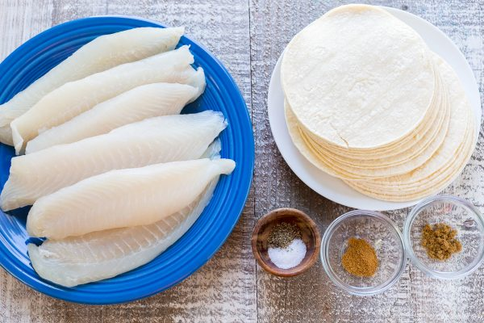
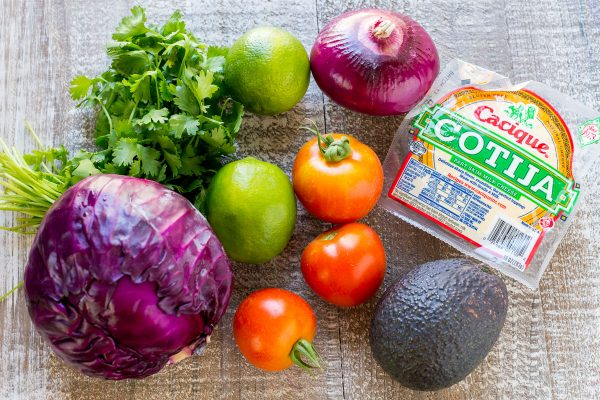
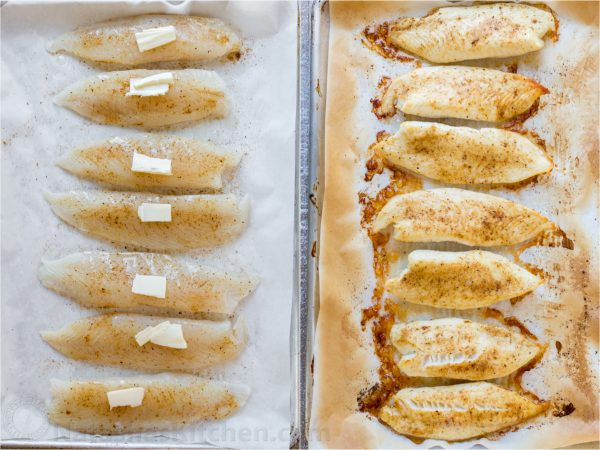
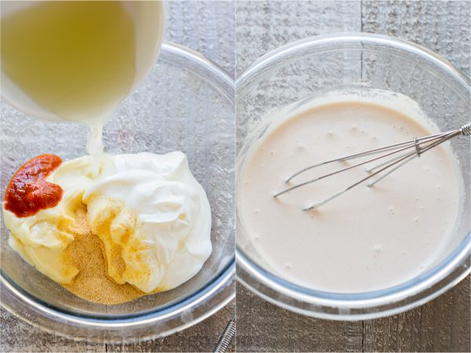

Our all-time favorite Fish Tacos recipe! These are loaded with fresh
ingredients and perfectly seasoned plump fish. Don’t skip the best
fish taco sauce – a garlic lime crema that you will want it on all
your tacos!
Ingredients
Fish Taco Ingredients:
24 small white corn tortillas
1 1/2 lb tilapia
1/2 tsp ground cumin
1/2 tsp cayenne pepper
1 Tbsp Butter

Fish Taco Toppings:
1/2 small purple cabbage
2 medium avocado sliced
2 roma tomatoes diced (optional)
1/2 diced red onion
1/2 bunch Cilantro longer stems removed
4 oz 1 cup Cotija cheese, grated
1 lime cut into 8 wedges to serve

Fish Taco Sauce:
1/2 cup sour cream
1/3 cup Mayo
2 Tbsp lime juice from 1 medium lime
1 tsp Sriracha sauce or to taste
Process
Line large baking sheet with parchment or silicone liner. In a
small dish, combine seasonings: 1/2 tsp cumin, 1/2 tsp cayenne
pepper, 1 tsp salt and 1/4 tsp black pepper and evenly sprinkle
seasoning mix over both sides of tilapia.
Lightly drizzle fish with olive oil and dot each piece with
butter. Bake at 375 for 20-25 min. To brown edges, broil for 3-5
minutes at the end if desired.

Combine all Taco sauce ingredients in a medium bowl and whisk
until well blended.

To serve the tacos, quickly toast the corn tortillas on a large
dry skillet or griddle over medium/high heat.
To assemble: start with pieces of fish then add remaining
ingredients finishing with a generous sprinkle of cotija cheese
and finally that awesome taco sauce! Serve with a fresh lime
wedge to squeeze over tacos.